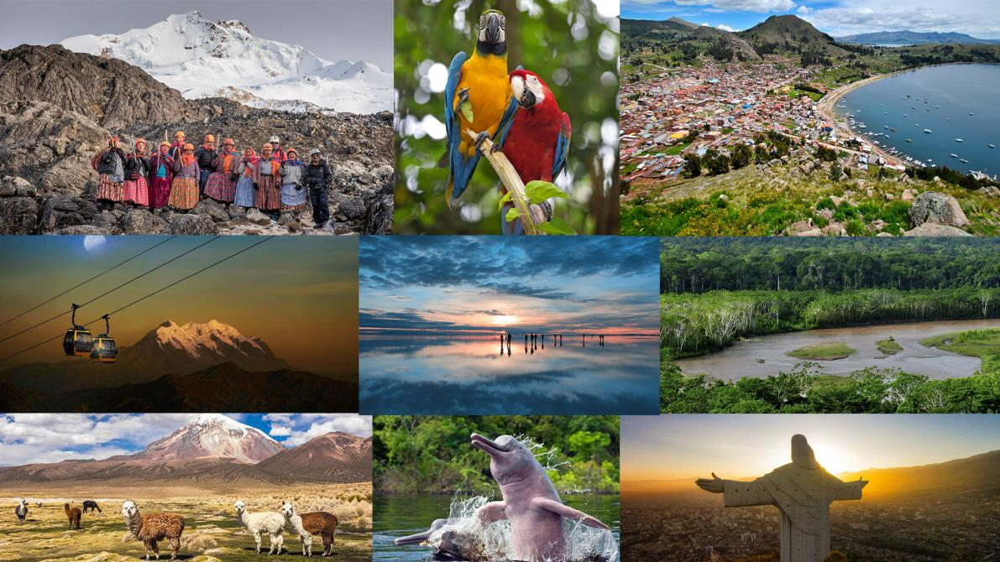

<DOCTYPEhtml>
<html>
<head><link rel="stylesheet" href="estilo/estilo1.css">
</head>

<body>
<header>
    <center>
    <h1>      
        5 LUGARES TURISTICOS DE BOLIVIA  
    </h1></center> 
</header>
<nav><h2>MENU</h2>
</nav>
<section> </section>
<aside> 
    <H3>
        <ul>
            <li>
                <a href="salar de uyuni.html">
                    Salar de Uyuni
                </a>
            </li>
            <li>
                <a href="parque madidi.html">
                    Parque Nacional Madidi
                </a>
            </li>
            <li>
                <a href="lago titicaca.html">
                   Lago titicaca
                </a>
            </li>
            <li>
                <a href="camino de la muerte.html">
                    Camino de la muerte
                </a>
            </li>
            <li>
                <a href="cerro rico.html">
                    Cerro Rico de Potosi
                </a>
            </li>
            
        </ul>


    </H3>

</aside>
<footer>
    <center>
    <h2>
        Elaborado por:
    </h2>
    <h4>
        Nataly Gabriela Siñani Quisbert
    </h4>
    <H4>UNIVERSIDAD MAYOR DE SAN ANDRES
    </H4>
    <H4>
        FACULTAD DE CIENCIAS PURAS
    </H4>
    <h4>
        CARRERA DE INFORMATICA
    </h4>
</center>

</footer>

</body>

</html>